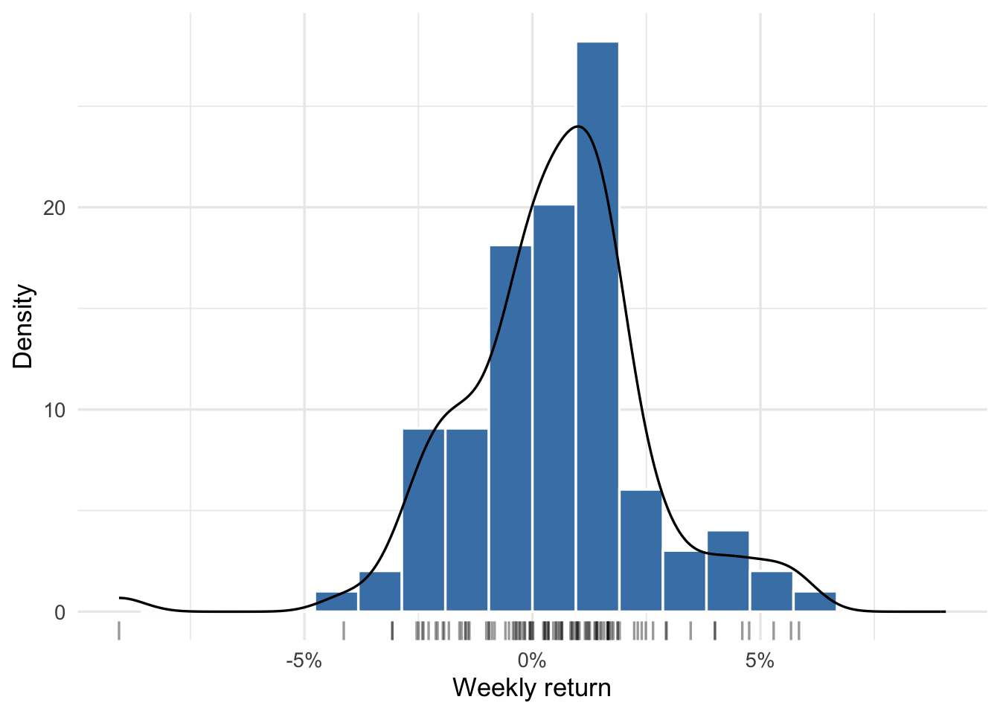
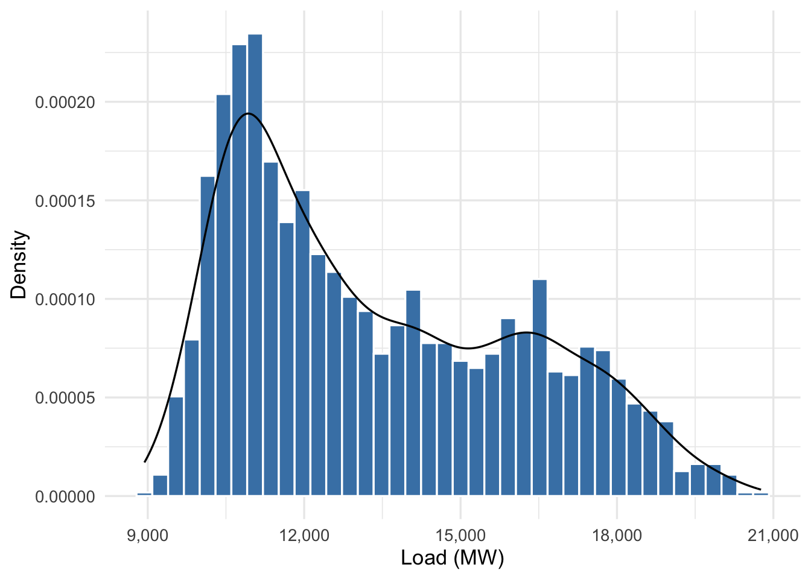
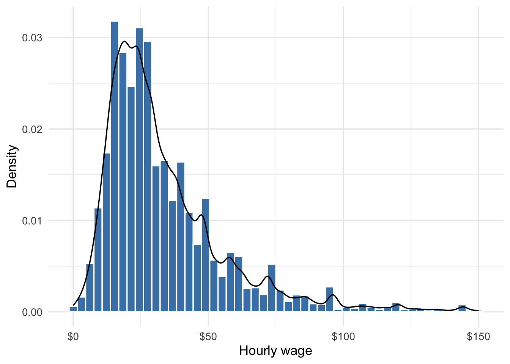
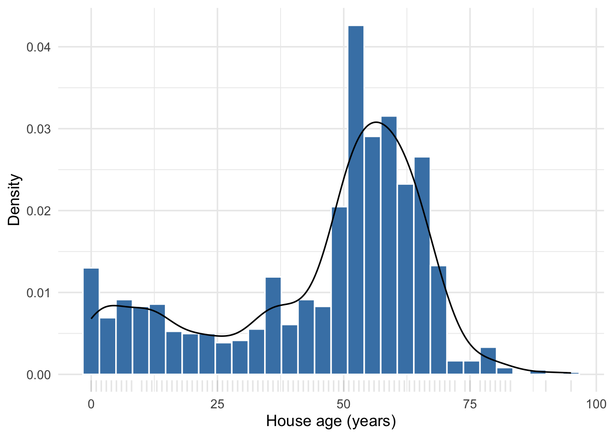

2 Describing Distributions of Quantitative Variables
Once we have a picture of a distribution, we need vocabulary to describe what we see. In practice there are four features of the distribution of a quantitative variable which tell us most of what we want to know: location (where is the center of the distribution, or what is a “typical value”?), spread (how far do values tend to range from the center?), skewness (is the distribution symmetric or stretched to one side?), and modality (how many peaks are there?). Extreme values or outliers — observations far from the bulk of the data — also merit comment, as they can impact analysis choices later or indicate data quality problems.
We’ll begin in this section by looking at skewness, modality, and outliers/extreme values. These are easy to see from the visualizations introduced in the last chapter, and they will help us decide how to faithfully measure location and spread in the next chapter.
2.1 Skewness
Definition 2.1: Symmetric and skewed distributions
A distribution is approximately symmetric when its left and right halves are rough mirror images of each other. It is right-skewed when most values cluster at the lower end and a long tail stretches to the right, and left-skewed when the long tail stretches to the left instead.
The weekly returns on the S&P 500 from October 2023 to September 2025 are approximately symmetric:
The distribution is centered at a small positive value with roughly equal spread in both directions. Many variables in business and economics, however, are right-skewed. The daily ERCOT demand data from the last chapter is one example.

About 70% of the daily means fall between 9,000 and 15,000 MW, while summer heat pushes the upper tail toward — and occasionally above — 20,000 MW. The mean (13,388 MW) is pulled to the right of the median (12,677 MW) by those high-demand days.
Similarly, if we look at the distribution of wages or salaries in a developed economy we tend to see pronounced right skew. Most people earn a moderate wage, but a few earn very high salaries that stretch the right tail of the distribution. For example, here are the hourly wages (or their salaried equivalent) for a representative sample of full-time U.S. workers, from the 2023 Current Population Survey, which records earnings for the 2022 calendar year:

The mean wage in the displayed data ($34) sits above the median ($27) — right skew again. A relatively small number of very high earners pull the mean up; the median is insensitive to them.
2.2 Multimodal distributions
Definition 2.2: Modality
The modes of a distribution are its peaks. A distribution with a single peak is unimodal and one with two distinct peaks is bimodal. Any distribution with more than one peak is multimodal.
Here’s a bimodal example from the Austin housing dataset: the distribution of house ages in years:

One peak corresponds to relatively new construction (ages near 0–10 years) and another to homes built several decades ago (when these areas of Austin initially saw rapid development). Bimodality often signals that the data come from two distinct subpopulations, and you should investigate what’s behind the two peaks before summarizing with a single number.
Determining whether a distribution has one or more modes can be tricky, especially with small datasets. A histogram or density plot can help, but the choice of bin width or smoothing parameter can change the number of apparent peaks even when the overall shape we see remains about the same. But even in large datasets it isn’t easy: take another look at Figure 2.2. Do you see one mode or two?
In practice, we often rely on a combination of visualizations, statistical methods, and domain knowledge to decide whether a distribution is unimodal, bimodal, or multimodal — if that decision is really important for our analysis.
2.3 Outliers and extreme values
Outliers are extreme values that are far from the bulk of the data. They may be valid observations of unusual outcomes, or they can be invalid data points corrupted by errors during data entry, reporting, or web-scraping (for example). The S&P 500 returns include one week when the index fell 9.1%, the most negative return in the data. The ERCOT distribution includes 8 days with average demand above 20,000 MW, all in the top 0.4% of daily means. These extreme observations appear valid. By contrast, while cleaning the Austin housing data I found one home listed at about $13 million. That was a typo — an extra zero, confirmed against the original listing.
How do we define an outlier? In the section on box plots in the last chapter we’ve already seen one definition of an outlier, but there are many others. None is definitive. These are best understood as rules of thumb rather than hard-and-fast definitions (which was the intent of John Tukey, who proposed the box plot outlier “rule” in the first place). Whether an observation is an outlier or extreme/unexpected value hinges on what we expected to see, and will therefore always be context dependent. Borrowing a phrase from Justice Potter Stewart, when we’re looking at a variable or two at a time you’ll usually know an outlier when you see it.